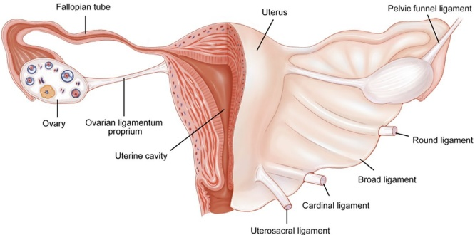

- Vagina: It is an upwardly wide and downwardly narrow muscular canal located centrally in the lower part of the pelvic cavity (the true pelvis). The front wall of the vagina is 7–9 cm in length, and the back wall is 10–12 cm in length. The vagina is not only an organ for sexual intercourse but also a channel for menstrual blood to be discharged and for the fetus to be delivered.
(a) Location: The anterior wall of the vagina is adjacent to the bladder and urethra; the posterior wall is close to the rectum. Its upper end wraps around the cervix, and the lower end opens into the vaginal vestibule. The crypt between the cervix and the vagina is called the vaginal fornix (vaginal vault, vault of vagina), which is divided into four parts: anterior, posterior, and lateral (left and right). The posterior component of the fornix is adjacent to the recto-

uterine recess (the lowest point of the pelvis). In clinical practice, this anatomical cavity is often the puncture site for (blood and/or pus) drainage.
(b) Tissue structure: The vaginal wall is composed of mucous membrane layer, muscular layer, and fibrous tissue layer from inside to outside. The mucous membrane layer is covered by nonkeratinized stratified squamous epithelium without glands, which is highly extensible due to multiple folds. The mucous membrane layer in the upper 1/3 of the vagina is subject to periodic changes influenced by sex hormones. The muscular layer consists of two layers of smooth muscle, that is, the inner circular and outer longitudinal layers, and is covered by a layer of fibrous tissue. The vaginal wall is rich in venous plexus, making it prone to bleeding or hematoma formation after injury.
- Uterus (or womb): It is a thick-walled muscular organ with a cavity and is the organ that bears the fetus and generates menstrual blood. The uterus is an inverted pear-shaped organ with a slightly flattened front and back, consisting of the corpus uteri (body of the uterus) and the cervix uteri. The ratio of the corpus uteri and the cervix varies with age and ovarian function, with the ratio being 1:2 before puberty, 2:1 in women of childbearing age (
15–49 years old), and 1:1 after menopause. The uterus weighs about 50 g–70 g, is 7 cm–8 cm long, 4 cm–5 cm wide, 2 cm–3 cm thick, and has a capacity (volume) of about 5 mL. The top end of the corpus uteri is defined as the fundus of the uterus, with the cornua uteri (horns of the uterus) on either side of it. The narrowest section connecting the body of the uterus and the cervix is called the isthmus of the uterus, with the upper end termed the anatomical introitus due to its anatomical narrowness and the lower end termed the histological introitus due to the transition of the endometrium into the mucous membrane of the cervix. The isthmus of the uterus lengthens during pregnancy. It can extend to 7–10 cm at the end of gestation, forming a part of the soft delivery canal, and is commonly used as the incision site for cesarean delivery. The uterine cavity is triangular in shape, wide at the top and narrow at the bottom, connected to the fallopian tubes on both sides and the cervical canal at the bottom. The cervical canal of the uterus is a pike-shaped cavity (3 cm long in adult women), the lower end of which is the external opening of the cervix to the vagina. The cervix of the uterus is divided into the lower part (the portio vaginalis or ectocervix), which protrudes into the vagina, and the upper supravaginal part (or endocervix). The external opening of the cervix is round before vaginal delivery but develops a transverse cleft after transvaginal childbirth, dividing the cervix into an anterior and a posterior lip.
(a) Location: The uterus is located in the center of the pelvis, with the fundus of the uterus below the level of the pelvic inlet and the external opening of the cervix slightly above the level of the sciatic spine. It is posterior to the bladder, anterior to the rectum, connected to the vagina at its lower end, and the fallopian tubes and ovaries on either side. When the bladder is empty, the normal uterus of an adult woman is in a mildly anteriorly tilted and forward-flexed position.
(b) Tissue structure: The body of the uterus consists of three layers from the inside out: the endometrium (mucosa), myometrium (muscularis), and peritoneum (serosa). The endometrium is subdivided into stratum compactum, stratum spongiosum, and stratum basalis. Of these, 2/3 of the interior surface is the functional layer (stratum compactum + stratum spongiosum), which is periodically regulated by ovarian hormones. The stratum basalis, that is, the basal layer, is the other 1/3 of the endometrium adjacent to the myometrium, which is not affected by hormones and does not undergo periodic changes. Myometrium consists of a large amount of smooth muscle tissue, a few elastic fibers, and collagen fibers. The peritoneum covers the uterine fundus and its anterior and posterior portions. The peritoneum of the anterior isthmus of the uterus is forwardly reflexed to form the vesicouterine pouch. In contrast, the peritoneum of the posterior cervix and posterior fornix of the vagina is backwardly reflexed at the back of the uterus to form the recto-uterine pouch, also known as the Douglas pouch. The cervix mainly comprises connective tissue with a small amount of smooth muscle, elastic fibers, and blood vessels. The mucosa of the cervical canal consists of a single layer of high columnar epithelium, with glands secreting alkaline mucus to form mucus plugs, which are subject to periodic changes as influenced by sex hormones. The vaginal part of the cervix is covered by stratified squamous cells. The junction of columnar and squamous epithelium is the most susceptible site for cervical cancer.
(c) Ligaments of the uterus: There are four pairs of ligaments of the uterus.
The broad ligaments are a pair of wing-like, double-layered folds of peritoneum that extend from the anterior and posterior walls of the uterus to connect the two sides of the uterus to the pelvic wall, which restrict the uterus from tilting to the sides. The broad ligament on each side is divided into anterior and posterior lobes with free upper ends. Its medial 2/3 wraps around the fallopian tubes, and its lateral 1/3 wraps around the ovarian arteries and veins, forming the infundibulopelvic ligament, also known as the suspensory ligament of the ovary (the fimbriae of the fallopian tube tubes is not covered by the peritoneum). The broad ligament between the medial side of the ovary and the uterine horn is slightly thickened and is called the proper ligament of the ovary (or utero-ovarian ligament, ovarian ligament). The broad ligaments flanking the body of the uterus are rich in blood vessels, nerves, lymphatic vessels, and loose connective tissue, which are termed paracervical tissues. The uterine arteries, veins, and bilateral ureters pass through the base of the broad ligaments.
The round ligaments are a pair of cord-like, smooth muscle and connective tissue bands. On each side, the round ligament arises from slightly below the proximal end of the fallopian tube in front of the horn of the uterus, travels forward and outward under the anterior lobe of the broad ligament, reaches the lateral pelvic wall, and then stops at the anterior end of the labia majora via the inguinal canal. The round ligaments are about 12–14 cm long and uphold the anteriorly tilted position of the uterus.
The cardinal ligaments, also known as the transverse cervical ligaments, are a pair of tough tissue bundles of smooth muscle and connective tissue fibers that run transversely between both sides of the cervix and the pelvic wall along the lower part of the broad ligaments. The cardinal ligaments hold the cervix in place and prevent uterine prolapse.
The uterosacral ligaments (covered by the peritoneum) consist of smooth muscle, connective tissue, and nerves governing the bladder. They originate from behind and superior to the junction of the corpus uteri and the cervix uteri and run laterally around the rectum to the front of the second and third sacral vertebrae. The uterosacral ligaments draw the cervix backward and upward, maintaining the uterus in an anteriorly tilted position.